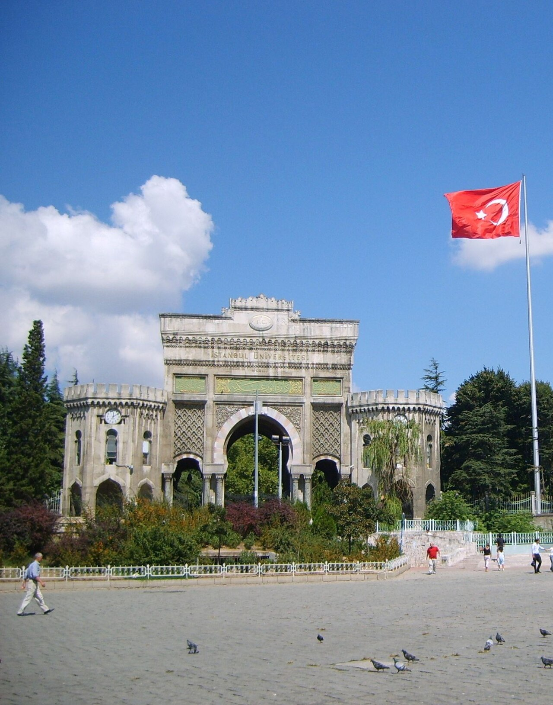

Türkiye Bursları Scholarship: Age Limits, Marks, Jan–Feb Window, Documents
Last updated: October 2026. Dates below name their cycle. Verify every date on turkiyeburslari.gov.tr before you apply.

Türkiye Bursları (Türkiye Scholarships) is the Turkish government's fully funded scholarship for international students, run by the Presidency for Turks Abroad and Related Communities. It covers associate degrees, bachelor's, master's and PhD study at Turkish universities, including tuition, accommodation, a monthly stipend, health insurance, a Turkish language course and a flight ticket. For Pakistani students it is one of the most accessible fully funded options — but its window is short, and its age and marks limits are hard cut-offs, not guidelines.
Age limits and minimum marks
| Level | Age limit | Minimum academic achievement |
|---|---|---|
| Associate and bachelor's | Under 21 | At least 70% |
| Master's | Under 30 | At least 75% |
| PhD | Under 35 | At least 75% |
| Medicine, dentistry, pharmacy (bachelor's) | Under 21 | At least 90% |
| Research scholarship | Under 50 | Per programme rules |
Read these numbers correctly. They are minimums to be considered, not the line that wins — selection is competitive and weighs academic success, social activities and motivation for your chosen field. Do not round your marks up to meet a threshold: the system checks your transcript, and a shortfall means ineligibility. Two more limits matter: applicants must be citizens of a country other than Türkiye (former Turkish citizens are excluded), and you must not already be enrolled at a Turkish university at the level you are applying for. Health sciences are funded at bachelor's level only, not at master's or PhD level.
The application window: short, once a year
- Official calendar window: 10 January – 20 February every year.
- 2026 cycle: ran 10 January – 20 February 2026.
- 2027 cycle: the year-specific announcement had not been published as of late September 2026. Expect the same window, but confirm it on turkiyeburslari.gov.tr before you submit.
- After applying: shortlisted candidates are usually interviewed between April and June, and results usually come in early August.
Because the window is only about six weeks, prepare everything in December: transcripts, passport, photo, recommendation letters and your intent letter. Applicants who start gathering documents on 10 January rarely finish in time.
How to apply through TBBS
Applications are free and made online through the Türkiye Scholarships Application System (TBBS) on turkiyeburslari.gov.tr. You register, fill in your education history, choose your preferred universities and programmes, and upload your documents. There is no application fee, and no agent can improve your chances — anyone charging you for a Türkiye Bursları application is selling something the programme gives away free.
Documents to prepare
- Diploma or graduation certificate, and transcripts for all completed study.
- National ID or passport, and a recent photograph.
- Exam results if you have them (national or international exams relevant to your level).
- Language certificates if you have them, depending on your programme's language of instruction.
- For PhD: a research proposal and a sample of your research work.
- Recommendation letters and a letter of intent explaining why you chose Türkiye and your field.
Selection runs in stages: a preliminary check of grades, age and documents, an expert evaluation, interviews for shortlisted candidates, and final selection. A weak intent letter is the most common reason strong transcripts still fail — see our SOP guide for how to write one that sounds like you, not a sample.
Language: no universal IELTS requirement
There is no universal IELTS requirement for Türkiye Bursları. A Turkish language year is part of the scholarship, and whether you need English proof depends on your chosen programme's language of instruction. If you choose an English-taught programme, check that programme's own language rule. Full detail is in our IELTS guide.
For Indian students
The same global rules apply to Indian applicants through the same TBBS system: the same age limits, the same 70/75/90 marks minimums, and the same January–February window. There is no India-specific quota, deadline or document list published by the programme — if a website claims one, treat it as unverified. Apply through turkiyeburslari.gov.tr, prepare documents in December, and confirm the year-specific dates on the official announcement before submitting.